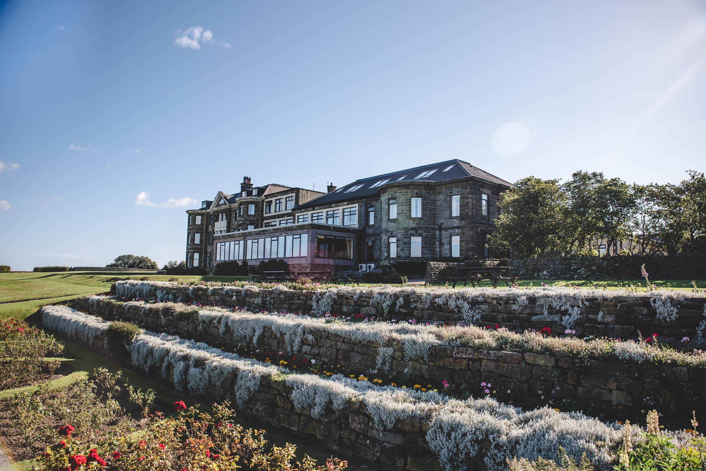

Raven Hall Hotel
Luxury Accomodation, Restaurant and Golf Course
Raven Hall Hotel
Raven Hall Country House Hotel in Ravenscar is dramatically situated 600 feet above sea level, overlooking Robin Hood's Bay in the North York Moors National Park and midway between Whitby and Scarborough.
Raven Hall is in an inspirational and historical setting and a perfect choice for your next trip to North Yorkshire.
The Raven Hall Hotel is one of those places that once you have visited, you will surely return. If you are seeking a hotel in Robin Hood’s Bay or a hotel in the Whitby area, you need look no further as we are ideally placed between the two beautiful North Yorkshire areas.
Raven Hall is more than a hotel; with 51 bedrooms, .3 suites and 8 lodges, a nine-hole cliff-side links golf course, tennis courts, games room and heated indoor swimming pool among our list of facilities. We also offer stunning Whitby weddings in our choice of Banqueting Suites.
Lunches, evening meals and afternoon teas are served daily in The Panorama Restaurant, Lounge and Bay View Lounge. The Head chef prides himself on using locally sourced produce wherever possible.
For an alternative accommodation choice, we also offer eight Finnish lodges that include a unique range of features for guests including luxurious furnishings and fittings, their own kitchen and wireless Internet access. The nature of their structure is sustainable, eco-friendly and assists in the reduction of CO2. Our comfortable cabins are the perfect choice if you are looking for holiday lodges near Scarborough.
Raven Hall in Ravenscar is one of North Yorkshire's best hotels ideally situated for walking holidays. The Cleveland Way crosses our 100 acres of land and it makes a perfect base for exploring the North York Moors, newly-trendy Whitby, 'Heartbeat Country' at Goathland, Pickering and the Victorian seaside town of Scarborough.
Raven Hall is also a favourite venue for wedding receptions, special occasions and conferences. The Raven Hall Country House Hotel has five events suites for up to 100 guests, 100 acres of land for team building events, barbeques, concerts and other outdoor pursuits. You will find it difficult to find accommodation in Whitby or the Scarborough areas to match Raven Hall.
To find out more information and about our rooms and our hotel tariffs, please click the button below.
Facilities at Raven Hall Hotel
We are constantly improving and making additions to both our facilities and our range of in-house entertainment. Some examples are below:
| LEISURE & FACILITIES |
|---|
| Heated indoor pool 10m x 4 m |
| Sauna |
| 9 hole cliff top gold course |
| 100 acres of award-winning grounds |
| Games room |
| 2 all weather tennis courts |
| Putting green |
| Croquet lawn |
| Bowls |
| Good Hope Chapel |
| FUNCTIONS & GROUPS |
|---|
| Weddings |
| Functions |
| Anniversaries |
| Christenings |
| Private Groups |
| Masonic Lodges |
| Car Clubs |
| Walking Groups |
| Large leisure groups |
| OUTDOOR ACTIVITIES |
|---|
| Husky trekking |
| Cycle hire |
| Pony trekking |
| Trail riding |
| Salmon & Champagne picnics |
| Rambles |
| Longer walks in the National Park |
| **All Outdoor Activities are offsite |
| CORPORATE & EVENTS |
|---|
| 4 fully equipped conferencing and Banqueting rooms with private bar |
| Cater for 2-100 delegates |
| Casino nights |
| Murder nights |
| Wine tasting evenings |
| Indoor race meetings |
| Speciality international evenings |
Hotel Rooms and Tariff
Raven Hall is a versatile hotel, ideal for a quiet retreat in beautiful surroundings offering a great base between Whitby and Scarborough, it also makes a perfect venue for weddings and conferences.
STANDARD TWIN
All standard twin rooms have en suites with bath and overhead shower, heated towel rail, several also have a walk-in shower on request.
EXCLUSIVE FINNISH HOLIDAY LODGES
Eight exclusive environmentally-friendly self-catering lodges, each with a log burner and sensational views overlooking Robin Hoods Bay.
Rooms Tariff
| DATES | MIDWEEK | WEEKEND |
|---|---|---|
| 23rd July 20 - 30th September 20 | £144.00 | £178.00 |
| 1st October 20 - 31st March 21 | £109.00 | £154.00 |
| 1st April 21 - 30th June 21 | £130.00 | £174.00 |
| 1st July 21 - 30th September 21 | £148.00 | £182.00 |
Booking online with our website will guarantee the best rates available with 5% online discount applied on booking and special offers are also published regularly.
Prices shown are for double, twin rooms, (some single rooms are available) per night inclusive of VAT at the prevailing rate, with option of accommodation and breakfast or the addition of 3 course dinner. Lodges and rates can be found in our Lodge section and are sold at room only.
Well behaved dogs are welcome in designated rooms charged from £5 per night (limited to 1 dog per room/lodge) and children aged 3 -14 yrs sharing parents’ rooms from £18 to include breakfast (2 years and under Free).
Bookings for family rooms, disabled or dog friendly rooms and any special requirements can be made directly with reservations by email: enquiries@ravenhall.co.uk or phone: 01723 870353
Check in is from 3.00pm. Check out is at 10.30am.
Terms & Conditions apply.
Raven Hall History
Until Raven Hall (which was formerly known as Peak Hall) was built in 1774, Ravenscar was a scattered hamlet of farm buildings. Staintondale was the main community in the area. However, there was in 1540 a large farm known as Peak house on the site of the 5th-century Roman fort, owned by a Mr John Beswick and his family. Nothing remains of the old fort except the foundations which were rediscovered during the building of Raven Hall. The foundation stone itself is now in Whitby Museum and it is suspected that the rest of the stones from the fort have found their way over the centuries into the walls of several local farms!
Raven Hall was originally built by Captain William Childs of London. A Captain in the King's Regiment of light Dragoons, he first came to Yorkshire with the army. In 1763 Captain Childs became the owner of the Alum Works at Ravenscar and we assume that it is this commercial interest - combined with the breath-taking beauty of the area, which led him to build his family holiday home here.
On his death in 1829 the Hall passed to his daughter Ann Willis. The family became quite wealthy from treating George III and various other Royals throughout Europe including the Queen of Portugal. But this wealth was quickly squandered by Ann's son, the Rev. Dr Richard Willis.
Addicted to both louse-racing and horse racing at Doncaster, the eccentric Reverend was finally reduced to advertising a hypnotic cure for insomnia at a guinea a time! At great expense, the Reverend Dr Willis built the incredible hanging terraced gardens and battlements at Raven Hall by literally blowing them out of the cliff face. Included in this project was a small but useful cave which was a cosy and well-hidden bolt hole for anyone who wished to pass signals out to sea.
It must have been some relief for the upstanding people of Ravenscar, when a Mr William Hammond of London, foreclosed on the mortgage in 1845 and took over the Hall from the debt-ridden Willis's! Raven Hall moved swiftly from the decadence of the Regency into Victorian respectability.
Mr Hammond however, was no absentee landlord. He quickly became a prominent local benefactor. He built the village church, the windmill and during the later part of his life, he became obsessed with the Scarborough to Whitby railway line. As a Director of the building project, it was only natural that a station should be built at Ravenscar - however, he did insist that as the line passed his 300 acres of property, that it should disappear under a tunnel! (This was built at an extra cost of £500!) Sadly, Mr Hammond died in 1885 three months before the line was completed.
After his wife's death in 1890, their four daughters who inherited the estate sold it to the Peak Estate Company for development as a holiday resort. Raven Hall itself was opened as a hotel in 1895 after a massive extension project and in 1897 the village name was changed to Ravenscar, (from the Danish 'Raven Scaur'). The golf links were opened in 1898 by the Earl of Cranbrooke. The Victorian square with its guest houses and tea rooms was also built at this time.
In 1911 the Ravenscar Estate Company was declared bankrupt and the remaining land was sold off at a famous auction in the hotel's Coach House.
Apart from the changes in ownership, little has been recorded about the Hotel since 1911, but it is known to have been used as a billet for the forces, during wartime and then continued as a Hotel to the present day.

{kind=link}
{kind=link}
{kind=link}
{kind=link}
{kind=link}
{kind=link}
{kind=link}